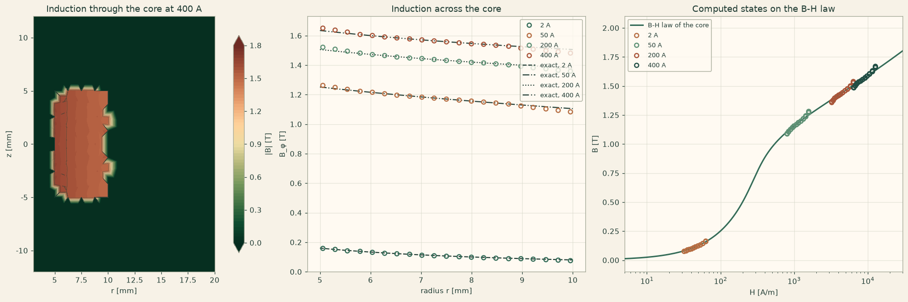
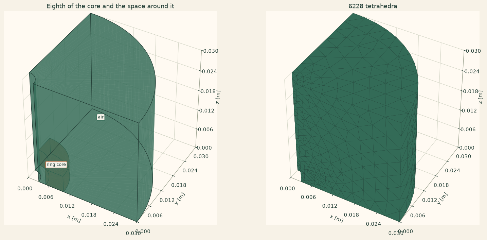

Docs › Examples › A user-defined nonlinear B-H law: saturation of a ring core
Magnetostatics · 3D
A user-defined nonlinear B-H law: saturation of a ring core
A finite magnetic ring core on a straight conductor saturates as the current grows, like a ferrite bead or the core of a current transformer.
Run locally with OneSimulation. The example downloads are free. Running them requires an activated runtime. Runtime Alpha 0.2.1a7 · CPython 3.13 on macOS (Apple Silicon), Ubuntu 22.04 (x86-64), and Windows x64. Installation and activation · View pilot plans. Scope of the reference checks.

What it computes
OneSimulation solves the nonlinear 3D vector-potential problem with a B-H law written as a plain Python function (energy density, field strength and differential reluctivity), with Newton's method on second-order Nedelec edge elements on one eighth of the core read from STEP; each Newton step is solved with GMRES and the auxiliary-space preconditioner for edge elements, whose multigrid hierarchy is kept over the Newton steps. The script that builds the STEP files comes with the notebook.
What it checks
Ampere's law fixes the field strength exactly: the core flux matches the B-H law inverted at H = I/(2 pi r) within 0.24 % at 2 A and within 0.1 % from 50 A to 400 A, the induction along the radius within 1.2 to 1.6 %, the field above the core within 1.2 % of the bare conductor, and the two meshes give the same flux to 0.02 %; the apparent permeability falls from 2005 to 141 as the core saturates.
Geometry
The notebook starts at the import of the CAD files nonlinear_bh_ferrite_ring.step, nonlinear_bh_ferrite_ring_core.step: STEP (AP242), readable by any CAD program, with the names of the faces that the boundary conditions use. Put them next to the notebook.

The geometry script
The script nonlinear_bh_ferrite_ring_geometry.py builds the geometry with the CAD objects of OneSimulation and writes the files. Change a dimension there, run it, and run the notebook again.
"""Geometry of the OneSimulation example "Saturation of a magnetic ring core on a straight conductor".
Builds one eighth of the region around a finite ring core (inner radius 5 mm, outer radius 10 mm,
10 mm high) that sits on a straight conductor of 3 mm radius, with the CAD objects of OneSimulation:
the space between the conductor surface and a cylinder of 30 mm radius, from the mid-plane of the
core (z = 0) up to z = 30 mm. Its faces form the groups conductor, planes (the two cut planes
through the axis), midplane, top and outer; it is written to nonlinear_bh_ferrite_ring.step. The
eighth of the core (z from 0 to 5 mm) is written to nonlinear_bh_ferrite_ring_core.step.
"""
from onesim.cad.d3 import Box, Cylinder
mm = 1e-3
height, conductor, region, inner, outer, core = (
30 * mm,
3 * mm,
30 * mm,
5 * mm,
10 * mm,
5 * mm,
)
eighth = Box(length=region, width=region, height=height).named("cut")
space = (
Cylinder(radius=region, length=height).named("air")
- Cylinder(radius=conductor, length=height).named("wire")
) & eighth
faces = space.boundaries
space = space.grouped(
conductor=space.select(faces=lambda face: face.id.startswith("wire")),
outer=space.select(faces=lambda face: face.id == "air.outer_wall"),
planes=faces["cut.x_min"] | faces["cut.y_min"],
midplane=space.select(faces=lambda face: face.id in ("air.bottom", "cut.z_min")),
top=space.select(faces=lambda face: face.id in ("air.top", "cut.z_max")),
)
space.save("nonlinear_bh_ferrite_ring.step")
(
(Cylinder(radius=outer, length=core) - Cylinder(radius=inner, length=core)) & eighth
).save("nonlinear_bh_ferrite_ring_core.step")The notebook
The complete notebook, cell by cell. Run it to produce the figures and the comparison printout.
A ring core (inner radius \(r_1=5\) mm, outer radius \(r_2=10\) mm, height \(h=10\) mm) sits on a long straight conductor of 3 mm radius that carries the current \(I\). The core material follows the nonlinear law
a classical polynomial fit of a soft magnetic material: linear with the initial permeability at low induction, saturating near 1.6 T. The law is defined in the notebook as a stored-energy function \(w(\mathbf B)\) that returns the energy density, \(\mathbf H=\partial w/\partial\mathbf B\) and the differential reluctivity \(\partial\mathbf H/\partial\mathbf B\), which Newton's method needs. The solver then finds the vector potential of
The finite core with the air around it and above it up to 30 mm from its mid-plane is modelled, one eighth by symmetry (two planes through the axis and the mid-plane of the core). The region comes from the CAD file nonlinear_bh_ferrite_ring.step (face groups conductor, outer, planes, midplane, top), the core from nonlinear_bh_ferrite_ring_core.step; the script nonlinear_bh_ferrite_ring_geometry.py builds them with the CAD objects of OneSimulation.
| face | condition | |---|---| | conductor | \(\mathbf n\times\mathbf H=\mathbf n\times\frac{I}{2\pi r}\hat{\boldsymbol\varphi}\) (carries the current \(I\)) | | planes (through the axis) | field normal to the plane, \(\mathbf n\times\mathbf H=0\) | | midplane, top, outer | \(\mathbf n\times\mathbf A=0\) (azimuthal field, tangential to these faces) |
Reference. The arrangement is rotationally symmetric, so Ampère's law gives the field strength exactly, whatever the material: \(H_\varphi(r)=I/(2\pi r)\) (Jackson, Classical Electrodynamics, 3rd ed., Sec. 5.8). The flux density in the core is then the inverse of the law, \(B(r)=B\bigl(H=I/(2\pi r)\bigr)\), and the flux through the core cross-section of height \(h\) is \(\Phi=h\int_{r_1}^{r_2}B\,dr\).
import numpy as np
from onesim.cad.d2 import Plane
from onesim.cad.exchange import load
from onesim.materials import VacuumPermeability
from onesim.meshing import LocalRefinement, TetrahedralMesher
from onesim.numerics import Numerics
from onesim.numerics.fem import FiniteElement, Nedelec
from onesim.numerics.linear import GMRES, AuxiliarySpaceMaxwell
from onesim.numerics.nonlinear import DampedNewton
from onesim.physics.magnetostatics import (
AnisotropicMagneticEnergy,
CoulombGauge,
MagneticFieldBoundary,
MagneticInsulation,
MagneticVectorPotential,
Magnetostatics,
region_mask,
)
from onesim.results.integration import integrate_plane, mean_value
from onesim.simulation import Problem, Simulation
from onesim.visualization import plots, theme
theme.set()Geometry and mesh
The core is embedded in the mesh of the region, with 1.2 mm cells inside it (1.8 mm on the coarser mesh of the mesh study); the cells grow with the distance from the core.
space, core = load("nonlinear_bh_ferrite_ring.step"), load(
"nonlinear_bh_ferrite_ring_core.step"
)
faces = space.boundaries
half, outer = core.size[2], core.size[0]
inner = min(np.hypot(*vertex.position[:2]) for vertex in core.vertices)
meshes = [
TetrahedralMesher(
target_size=4e-3,
embedded_regions=(core,),
refinements=(LocalRefinement(region=core, target_size=h),),
size_field=lambda points, h=h: np.clip(
h
+ 0.5
* np.hypot(
np.maximum(np.hypot(points[:, 0], points[:, 1]) - outer, 0),
np.maximum(points[:, 2] - half, 0),
),
h,
4e-3,
),
).generate(space)
for h in (1.2e-3, 1.8e-3)
]
mesh = meshes[0]
view = plots.Camera(elevation=40, azimuth=-60)
fig = plots.figure(1, 2, size=(14, 6))
plots.geometry(
[space.named("air"), core.named("ring core")],
camera=view,
title="Eighth of the core and the space around it",
ax=fig[0],
)
plots.mesh(
mesh,
groups=("all",),
legend=False,
camera=view,
title=f"{mesh.cell_count} tetrahedra",
ax=fig[1],
)
plots.show()Material law
One function holds the B-H law of the core and the linear law of the air: it returns the energy density, the field strength and its derivative with respect to the induction at the quadrature points. region_mask(core, points) decides by the cells of the mesh which points lie in the core, so the law changes exactly at the faces of the embedded core. AnisotropicMagneticEnergy hands the function to the solver in the axes of space.
mu0 = float(VacuumPermeability().evaluate())
linear, saturation = 1 / (mu0 * 2000.0), 145.0
def material(induction, points, context):
"""Energy density, H and dH/dB of the core law H = (k1 + k2 |B|^8) B inside the ring, of air outside."""
in_core = region_mask(core, points)
k1, k2 = np.where(in_core, linear, 1 / mu0), np.where(in_core, saturation, 0.0)
b = np.linalg.norm(induction, axis=1)
secant = k1 + k2 * b**8
tangent = (
secant[:, None, None] * np.eye(3)
+ (8 * k2 * b**6)[:, None, None] * induction[:, :, None] * induction[:, None, :]
)
return k1 * b**2 / 2 + k2 * b**10 / 10, secant[:, None] * induction, tangentModel
The current enters through the tangential field on the conductor surface. Newton's method starts from zero for every current; the highest current is also solved on the coarser mesh. Each Newton step is solved with GMRES and the auxiliary-space preconditioner for edge elements (AuxiliarySpaceMaxwell), whose multigrid hierarchy is kept over the Newton steps.
currents = (2.0, 50.0, 200.0, 400.0)
runs = [(current, meshes[0]) for current in currents] + [(currents[-1], meshes[1])]
models = [
Magnetostatics(
domain=space.volume,
permeability=VacuumPermeability(),
formulation=MagneticVectorPotential(gauge=CoulombGauge()),
magnetic_response=AnisotropicMagneticEnergy(
lambda points, context: np.eye(3), material
),
)
for _ in runs
]
numerics = Numerics(
spatial=FiniteElement(element=Nedelec(order=2)),
nonlinear_solver=DampedNewton(
linear_solver=GMRES(preconditioner=AuxiliarySpaceMaxwell()),
relative_tolerance=1e-10,
absolute_tolerance=1e-12,
),
)
fields = [
Simulation(
problem=Problem(
name="Ring core",
geometry=space,
physics=(model,),
boundary_conditions=(
MagneticFieldBoundary(
boundary=faces.conductor,
physics=model,
value=(
lambda I: lambda x, y, z: I
/ (2 * np.pi * (x * x + y * y))[:, None]
* np.column_stack((-y, x, 0 * x))
)(current),
),
MagneticFieldBoundary(
boundary=faces.planes, physics=model, value=(0.0, 0.0, 0.0)
),
MagneticInsulation(
boundary=faces.outer | faces.midplane | faces.top, physics=model
),
),
),
mesh=grid,
numerics=numerics,
)
.solve_stationary()
.field(model.magnetic_flux_density)
for model, (current, grid) in zip(models, runs)
]
coarse, fields = fields[-1], fields[:-1]Comparison with Ampère's law
The exact induction is the B-H law inverted at \(H=I/(2\pi r)\), read from a fine table of the law. The flux through the core cross-section in the plane \(y=0\) (twice the half height) and the induction along a radius in the mid-plane are compared with it. Because the field strength is set by Ampère's law alone, the finite height of the core causes no end effect: the induction near the end faces must equal that in the mid-plane, and above the core the air sees the bare conductor.
table = np.linspace(0.0, 2.5, 25001)
exact_b = lambda H: np.interp(H, (linear + saturation * table**8) * table, table)
r = np.linspace(inner, outer, 2001)
exact_flux = [
2 * half * np.trapezoid(exact_b(current / (2 * np.pi * r)), r)
for current in currents
]
cut = Plane(origin=(0, 1e-9, 0), normal=(0, 1, 0))
in_section = lambda p: (p[:, 0] > inner) & (p[:, 0] < outer) & (p[:, 2] < half)
fluxes = [
2 * integrate_plane(field, cut, normal_component=True, within=in_section).value
for field in fields
]
line = np.linspace(inner + 5e-5, outer - 5e-5, 41)
points = np.column_stack((line, np.full_like(line, 1e-7), np.full_like(line, 1e-7)))
near_end = np.column_stack(
(line, np.full_like(line, 1e-7), np.full_like(line, 0.95 * half))
)
print(
"current [A] H at r1 [A/m] core flux [µWb] Ampère + B-H law [µWb] deviation largest B deviation on the radius"
)
for current, field, flux, exact in zip(currents, fields, fluxes, exact_flux):
profile = field.evaluate(points)[:, 1]
print(
f"{current:11.0f} {current / (2 * np.pi * inner):15.0f} {1e6 * flux:17.4f} {1e6 * exact:24.4f} {100 * (flux / exact - 1):+10.3f} %"
f" {100 * np.abs(profile - exact_b(current / (2 * np.pi * line))).max() / exact_b(current / (2 * np.pi * line)).max():12.3f} %"
)
apparent = [
flux / (2 * half * mu0 * current / (2 * np.pi) * np.log(outer / inner))
for flux, current in zip(fluxes, currents)
]
end_effect = (
np.abs(
fields[-1].evaluate(near_end)[:, 1] - fields[-1].evaluate(points)[:, 1]
).max()
/ fields[-1].evaluate(points)[:, 1].max()
)
above = np.column_stack((line, np.full_like(line, 1e-7), np.full_like(line, 2 * half)))
coarse_flux = (
2 * integrate_plane(coarse, cut, normal_component=True, within=in_section).value
)
print(
f"end effect at {currents[-1]:.0f} A: largest change of B_phi from the mid-plane to 95 % of the half height {100 * end_effect:.3f} %"
)
print(
f"air above the core (z = h): largest deviation from mu0 I/(2 pi r) "
f"{100 * np.abs(fields[-1].evaluate(above)[:, 1] / (mu0 * currents[-1] / (2 * np.pi * line)) - 1).max():.3f} %"
)
print(
f"mesh study at {currents[-1]:.0f} A: core flux {1e6 * coarse_flux:.4f} µWb ({meshes[1].cell_count} tetrahedra) and "
f"{1e6 * fluxes[-1]:.4f} µWb ({meshes[0].cell_count} tetrahedra), exact {1e6 * exact_flux[-1]:.4f} µWb"
)
print(
"apparent relative permeability of the core, flux / flux without core: "
+ ", ".join(f"{value:.0f}" for value in apparent)
)Figure
The induction in the cut plane at the highest current, where the inner part of the core is saturated, the induction along the radius for all currents, and the B-H law with the computed pairs of \(|\mathbf H|\) and \(|\mathbf B|\) at points in the core.
samples = np.column_stack(
(
np.repeat(line[::4], 3),
np.full(33, 1e-7),
np.tile(half * np.array([0.1, 0.5, 0.9]), 11),
)
)
pairs = [
(
current / (2 * np.pi * samples[:, 0]),
np.linalg.norm(field.evaluate(samples), axis=1),
)
for current, field in zip(currents, fields)
]
curve = np.linspace(0.0, 2.0, 400)
fig = plots.figure(1, 3, size=(18, 5.5))
plots.section(
fields[-1],
plane=Plane(origin=(0, 1e-7, 0), normal=(0, 1, 0)),
component=lambda B, position: np.linalg.norm(B, axis=1),
limits=(0, 1.8),
contours=10,
subdivisions=2,
symmetry={"planes": [((0, 0, 1), (0, 0, 0))]},
label="|B| [T]",
xlimits=(0.003, 0.02),
ylimits=(-0.012, 0.012),
xlabel="r [m]",
ylabel="z [m]",
length_unit="mm",
title=f"Induction through the core at {currents[-1]:.0f} A",
ax=fig[0],
)
plots.line(
points={
f"{current:.0f} A": (1e3 * line[::2], field.evaluate(points)[::2, 1])
for current, field in zip(currents, fields)
},
reference={
f"exact, {current:.0f} A": (1e3 * r, exact_b(current / (2 * np.pi * r)))
for current in currents
},
xlabel="radius r [mm]",
ylabel="B_φ [T]",
title="Induction across the core",
legend="upper right",
ax=fig[1],
)
plots.line(
(linear + saturation * curve**8) * curve,
{"B-H law of the core": curve},
points={f"{current:.0f} A": pair for current, pair in zip(currents, pairs)},
scale="logx",
xlimits=(5, 3e4),
xlabel="H [A/m]",
ylabel="B [T]",
title="Computed states on the B-H law",
legend="upper left",
ax=fig[2],
)
plots.show()Going further
Replace the polynomial by a tabulated B-H curve (interpolated with its derivative) or by an anisotropic law for grain-oriented steel, whose axes the frame function supplies; cut an air gap into the core in nonlinear_bh_ferrite_ring_geometry.py and watch the saturation move to higher currents.